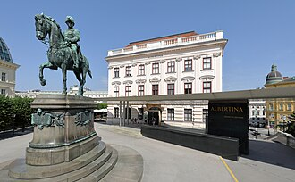
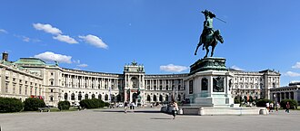
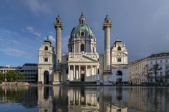
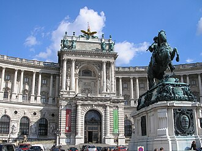
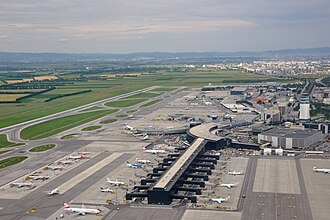
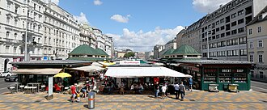

10/31（周六）维也纳 本人 solo → 机场
⚠ 排得下（有风险点） 作息：默认 08:00 起、09:00 出门（10/30 住处未定，按从 Hbf 一带出发写）；晚上去机场是固定的
- ✅排得下
- ⚠10/30 晚住处未定 → 出发点按 Hbf 写；U4 那一站没单独查
今天去哪
Hbf 存包 → Naschmarkt → Karlskirche → 老城（斯蒂芬大教堂、Graben、国家图书馆大厅、小吃）→ 傍晚抱石 → 晚饭 → 23:53 REX7
必须卡的时间点
| 时间 | 要做的事 |
|---|---|
| 15:00 | Naschmarkt 周六跳蚤市场结束（06:30–15:00） |
| 11:30 / 13:00–16:30 | 斯蒂芬大教堂周六正式参观时段（09–11:30、13–16:30） |
| 18:00 | Prunksaal、Trześniewski、Karlskirche 周六 18:00 关门 |
| 22:00 | boulderbar Hauptbahnhof 周六关门 |
| 23:53 | REX7 Wien Hbf → 机场 00:15（D-110）；备选 00:23→00:45；VAB1 末班 23:15 |
| 11/1 07:45 | FR755 VIE 起飞（只有随身小包）；当晚在 T3 过夜 |
今天的安排（默认组合）
Hbf 存包 → Naschmarkt → Karlskirche → 老城（斯蒂芬大教堂、Graben、国家图书馆大厅、小吃）→ 傍晚抱石 → 晚饭 → 23:53 REX7
这个组合会去的地方（图片，13 处）










圆形图是目的地实景（公开百科条目配图），不是小红书截图。没有实景的用圆标 + 地名。
小红书出处（方便搜原帖；有题目写题目，没有题目写大致内容和作者。截图本身不放上来）：
- Albertina 阿尔贝蒂娜：《维也纳，真的P人圣地》 · 作者 墨尔本的烤肉卷
- Graben / Kohlmarkt / Ringstraße 歌剧院一带：《🇦🇹维也纳1天行程安排》 · 作者 我是徐徐徐
- Graben / Kohlmarkt / Ringstraße 歌剧院一带：《维也纳一日游｜老城Citywalk路线✨》 · 作者 小C攻略
- Hofburg – Kaiserappartements/Sisi Museum 霍夫堡皇宫：《🇦🇹维也纳三天两晚这样玩😀》 · 作者 PhD不做PPT
- Karlskirche 卡尔教堂：《维也纳有种断档领先的感觉》 · 作者 炫子姐姐
- Stephansdom 圣斯蒂芬大教堂：《维也纳 | 超详细绝美出片教堂徒步指南》 · 作者 Julia
- Flughafen Wien：《🇦🇹 奥地利湖区三天两晚胚胎级攻略》 · 作者 fifi
- Wien Hauptbahnhof：《维也纳当天往返布达佩斯懒人玩法（3月版）》 · 作者 从不说早安
- Naschmarkt 纳什市场：大致内容：维也纳餐厅P1-P7 · 作者 银比猴子酱
可以去的地方（大概多久）
| 地方 / 活动 | 大概多久 |
|---|---|
| Naschmarkt 跳蚤市场 + 摊位 | 1–1.5 小时（15:00 前） |
| Karlskirche | 45 分钟 |
| 斯蒂芬大教堂 | 1 小时 |
| Graben / Kohlmarkt | 20–30 分钟 |
| Prunksaal 国家图书馆大厅（周六 09–18） | 1 小时 |
| Trześniewski 小面包 / Bitzinger 香肠 | 各 20–30 分钟 |
| Albertina / Hofburg 一带 | 1 小时 |
| 🧗 boulderbar Hauptbahnhof（周六 09–22） | 3 小时左右 |
真实交通时刻
- Hbf → Naschmarkt：U1 Hbf → Karlsplatz 3′ + U4 1 站 + 步行 5′
- Naschmarkt → Karlskirche 步行 11′；Karlsplatz → Stephansplatz U1 2′（11:32、11:37 …）
- Graben → Prunksaal 8′ → Trześniewski 7′ → Bitzinger 7′ → Karlsplatz 8′（步行）
- Karlsplatz → Hbf U1 3′；Hbf → boulderbar 步行 11′
- Wien Hbf → 机场：23:37→00:11（换 1）、REX7 23:53→00:15、REX7 00:23→00:45
这天已经定了的（1）
- D-110 10/31 去机场：REX7 Wien Hbf 23:53 → 机场 00:15（备用 00:53）
这天全部地点的图片（13 处）
圆形图是目的地实景（公开百科条目配图），不是小红书截图。没有实景的用圆标 + 地名。
小红书出处（方便搜原帖；有题目写题目，没有题目写大致内容和作者。截图本身不放上来）：
- Albertina 阿尔贝蒂娜：《维也纳，真的P人圣地》 · 作者 墨尔本的烤肉卷
- Graben / Kohlmarkt / Ringstraße 歌剧院一带：《🇦🇹维也纳1天行程安排》 · 作者 我是徐徐徐
- Hofburg – Kaiserappartements/Sisi Museum 霍夫堡皇宫：《🇦🇹维也纳三天两晚这样玩😀》 · 作者 PhD不做PPT
- Stephansdom 圣斯蒂芬大教堂：《维也纳 | 超详细绝美出片教堂徒步指南》 · 作者 Julia
- Flughafen Wien：《🇦🇹 奥地利湖区三天两晚胚胎级攻略》 · 作者 fifi
- Wien Hauptbahnhof：《维也纳当天往返布达佩斯懒人玩法（3月版）》 · 作者 从不说早安
- Naschmarkt 纳什市场：大致内容：维也纳餐厅P1-P7 · 作者 银比猴子酱
这天涉及的地点
- Stephansdom 圣斯蒂芬大教堂 教堂入口区 周一–六 06:00–22:00 免费；正式参观 周一–六 09:00–11:30、13:00–16:30 €8；南/北塔每日 09:00–19:00；地下墓穴导览 10:00–16:30 多场
- Hofburg – Kaiserappartements/Sisi Museum 霍夫堡皇宫 每日 10:00–16:30（16:00末次入场/售票）；不准带行李、无寄存
- Prunksaal 奥地利国家图书馆大厅 周二、周六均 09:00–18:00（10月起周一闭馆）
- Albertina 阿尔贝蒂娜 每日 10:00–18:00，周三、五到21:00
- Karlskirche 卡尔教堂 周一–六 09:00–18:00
- Naschmarkt 纳什市场（周六跳蚤市场） 摊位周一–六（周六最长06:00–18:00）；餐厅到23:00；跳蚤市场每周六 06:30–15:00 → 31日有
- Graben / Kohlmarkt / Ringstraße 歌剧院一带 全天（户外）
- Trześniewski（Dorotheergasse 1） 周一–五 08:30–19:30；周六 09:00–18:00
- Bitzinger Würstelstand Albertina 每日 08:00–04:00
- boulderbar Hauptbahnhof 周一–五 09:00–23:00；周六日/节假日 09:00–22:00 → 周二27: 09–23；周六31: 09–22
- Wien Hauptbahnhof Tamburi/ÖBB 储物柜 车站营业时间内可用；可网上预订或现场
- Wien Hauptbahnhof
- Flughafen Wien（VIE，11/1 FR755 07:45；当晚睡机场）